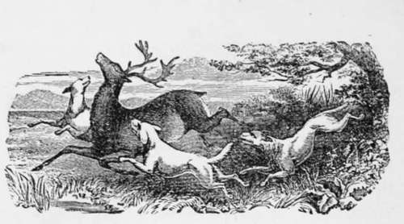

Mange
Description
This section is from the book "Breeding, Training, Management, Diseases Of Dogs", by Francis Butler. Also available from Amazon: Breeding, training, management, diseases.
Mange
Next to Distemper, Mange is the most common and the most troublesome disease, that Dog dom is heir to. No breed, no age, no si2e is exempt from its attacks. It is propagated in a variety of ways, and is to a great extent hereditary. It is also contagious, is spontaneously produced by gross feeding and dirty bedding, and is sometimes an appendage to Distemper. I have seen puppies, covered with Mamie sores on their entering the world, en-tailed on them by their Sire or Dam, or perhaps even of origin more remote. A dog, by simply lying where a diseased animal has been, may become contaminated, or by coming in contact with him in the street. Fortunately, it cannot be taken by any human being, (at least I have never known a case), any more than the Scarlet Fever can be conveyed to a dog. 'It is very similar to the Itch, in the human race, and I should think surpassed even the genuine " Scotch Fiddle" I have good grounds for believing that ordinary Mange, is produced by insects, generated in the blood and brought to life on the skin. Of the secret of their formation, I confess my entire ignorance ; but as outward applications are far more efficacious than anything taken internally, and as one rubbing with the Mange-Liniment allays the irritation, I am still further convinced of its being an animal production. Are not insects visibly brought to light in the same way on the surface of the human body ? The tendency of the secretions of the system to produce these animalcule may certainly in a great measure be averted, by keeping the body in a healthy state, so as to check any stagnancy of the juices, which favors the spontaneous production of animal life. Wholesome and moderate fare, exercise and cleanliness are the grand preventives, "Butler's Mange Liniment and Flea Exterminator" is a sovereign cure, as it not only eradicates the disease, but speedily reproduces a superabun dance of hair. But I would recommend both preventives and cure. As the Disease is-principally caused by impurities, perfect cleanliness must be attended to without, and all grossness avoided within, where there is any indication of eruption. If " Butler's Mange Liniment" cannot be had, Oil of Vitriol, diluted to the strength at which it can just be borne on the tongue, without burning, to which add a quarter of an ounce of finely ground Indigo .and a quarter of an ounce of Gunpowder, (mixed well together), to a quart of the diluted Oil of Vitriol. The animal should be first well washed (if the weather, etc., be favorable), and then rubbed all over with the mixture, every other day. Every alternate day, he should be well anointed with common fish-oil. An ointment of Sulphur and Lard is another remedy, but I object to Sulphur, as it often strikes to the limbs of the animal, injuring him for life, Bo if this be used, he should be carefully kept from taking cold. It is preferable that he should be washed, before every application. Whatever be used, the beast should be rubbed from the tip of the nose to all his extremities and the mixture must be well rubbed in. " Butler's Mange Liniment," never fails to produce a beautiful coat and to allay the irritation on the first application ; which I have never known any other compound to effect. Its application should however, be repeated every other day, for three or four times, to ensure death to all forthcoming animalcule. No animal occasionally rubbed with it, has been known to take the Mange, and for beautifying the coat and cleansing the skin, its equal is not to be found. Logs affected with any cutaneous eruption, should be subjected to a thorough but gentle physicing, and their mode of living should be entirely changed, in order to give the constitution a fair chance to purify itself, and put a stop to all further spontaneous insectile productions among the sluggish secretions of a disordered frame.
The visible symptoms of Mange are, bare ' spots, irritation, eruptions on the skin, a shortening, or unnatural falling off of the hair, redness on the back, bowels or other parts. Fleas also produce a kind of Mange, perhaps the most difficult of cure : as they disease and poison the whole surface of the body, and if neglected sometimes reduce the system to unrecoverable weakness, by depriving the dog of his necessary rest. Very old dogs arc the most difficult to cure but I have not met with an incurable subject yet. The disease, however, should be taken in hand as early as possible, as, to say the least of it, it greatly annoys and disfigures the sufferer for a season.
Continue to: